MOOWS / Issue 01 · August 2026
A pier in translation
Three accounts of one strange trip out to sea.
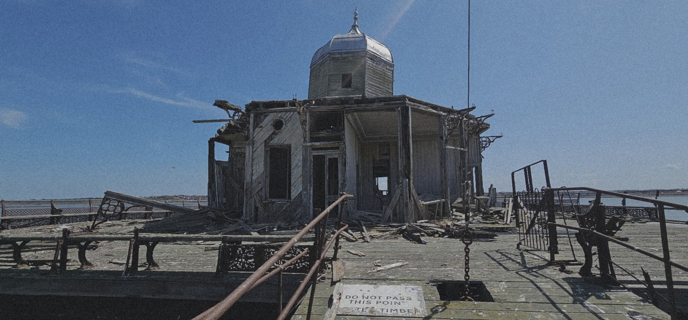
Русский
Шло второе столетие после Всемирного потопа.
Океан давно проглотил континенты. Для большинства людей суша стала мифом — сказкой, которую рассказывают детям, чтобы те не боялись горизонта.
Но я знаю, что скрывается под водой.
Там лежит другой мир. Мир, который убил сам себя.
Когда-то сушу покрывали дата-центры — бесконечные ангары, пожиравшие электричество, как голодные киты.
Теперь оно принадлежит нам.
Меня называют мутантом.
Возможно, так и есть. Мои легкие больше человеческих, кровь дольше удерживает кислород, а тело не боится глубины. Пока другие ищут добычу у поверхности, я ухожу туда, где лежит прошлое.
На сотни метров вниз. Среди ила и ржавчины стоят скелеты небоскребов, автомобили, крыши домов. Иногда попадаются вещи, за которые на атоллах платят целое состояние: детали машин, цветные металлы, герметичные контейнеры.
Но дороже всего — бумага. За нее платят ученые, торговцы,...
Сегодня я держу курс к старому пирсу где-то на севере. Теперь он торчит из воды, словно кость давно умершего зверя. Местные считают меня безумцем. Или юродивым.
Потому что я ищу не бумагу. Я ищу одну-единственную страницу.
Говорят, на ней отмечено место, где вода заканчивается. Где еще можно найти настоящую землю. Или хотя бы надежду, что суша существует.
Пока же вокруг только чайки. Только белые кости каракатиц. Только соль, ветер и гнилое дерево, которое медленно возвращает океану память о мире, которого больше нет.
English
Herne Bay Pier has existed in three different forms.
The first pier was built in 1832.
Stretching more than 3,600 feet into the sea, the timber structure was built to receive passenger steamers and became one of the longest piers of its time. Storms, marine borers and the arrival of the railway eventually made it obsolete. It was dismantled in 1870–71.
A shorter iron pier replaced it in
1873. At just over 300 feet, it served mainly as a promenade and entertainment venue, with a bandstand and later a theatre, but was too short to function as a deep-water landing stage.
In 1899, Herne Bay opened its third and most ambitious pier. At 3,787 feet, it became the second longest in England. An electric tram carried passengers along its length, while a pavilion, theatre and restaurant made it a major seaside attraction.
Passenger steamers continued to call there until 1963.
During the Second World War, sections of the pier were deliberately blown up to prevent enemy landings and later bridged by the army. The structure never fully recovered.
On 11 January 1978, a winter storm destroyed much of the central span.
The damaged section was dismantled in 1980, leaving the pier split in two: a short section attached to the shore and the original pier head isolated at sea.
Today the landward pier is again a public space, with cafés, small businesses and community events. Offshore, the abandoned pier head remains where the Victorian structure once ended, exposed to wind, salt and the North Sea.
Português
Tudo começou na rua do píer. Acabávamos de chegar a Herne Bay e, logo de cara, senti que o ar lembrava o litoral que conheci no Brasil. Mas havia algo diferente.
A praia era coberta por pedras, e, diante do mar, existiam dois píeres. Um deles estava cheio de vida: comida, música, turistas. O outro permanecia abandonado, isolado no meio do mar. Era impossível não querer descobrir o que havia lá.
Por sorte, a Lucy tinha trazido um paddleboard.
Deixamos a maior parte das nossas coisas com nosso amigo Glen e seguimos em direção ao píer, levando apenas o essencial preso à prancha.
A travessia foi muito mais difícil do que imaginávamos. A corrente nos empurrava para longe e, por um momento, achei que não conseguiríamos chegar.
Foi quando a Lucy olhou para mim e disse:
— A gente vai conseguir. Você rema. Eu vou atrás batendo a perna.
Mudamos de estratégia e seguimos revezando.
Ali, no meio do mar, cercados apenas por aço enferrujado e gaivotas, subi o drone para registrar o lugar. Não demorou para perceber que as aves estavam curiosas demais, então fiz algumas imagens e o guardei antes que resolvessem atacá-lo.
Enquanto explorávamos a estrutura, a Lucy apontou para algo se movendo na água. Pensamos que fosse uma boia, mas era uma foca — ou, como ela prefere dizer, um "gatinho marinho".
Pouco depois, um salva-vidas chegou de paddleboard. Disse que a maré estava subindo e nos acompanhou de volta até a praia.
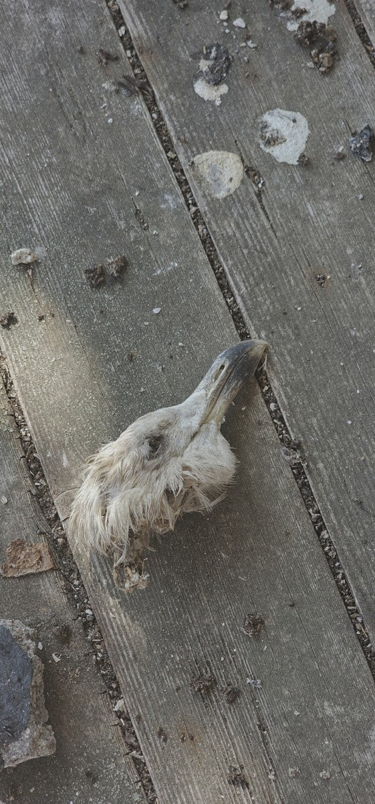
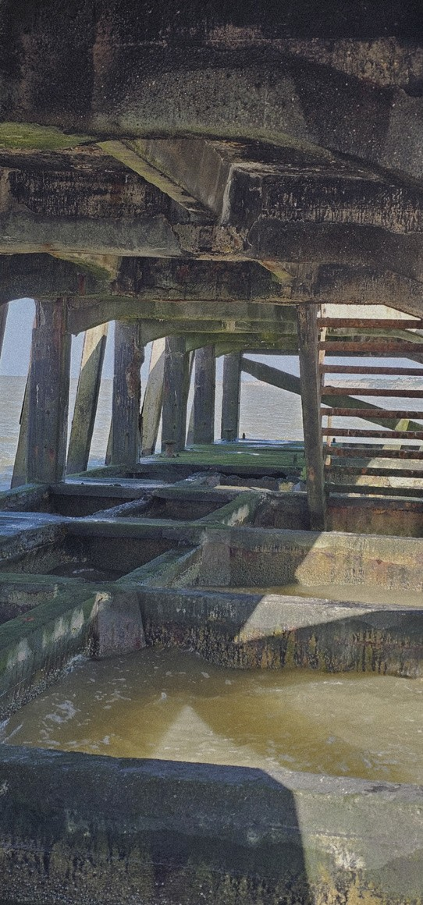
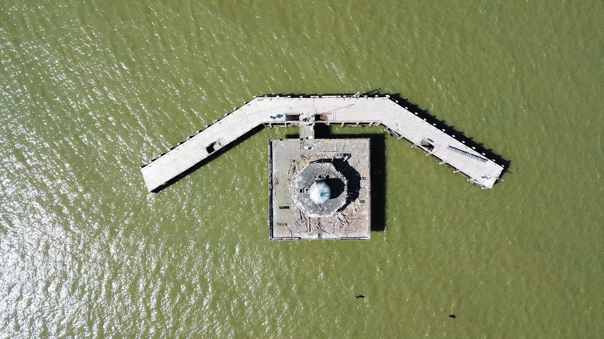
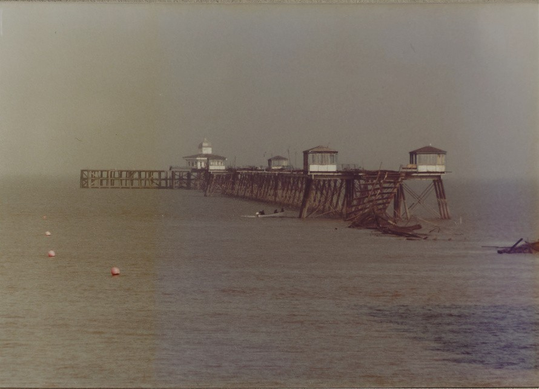
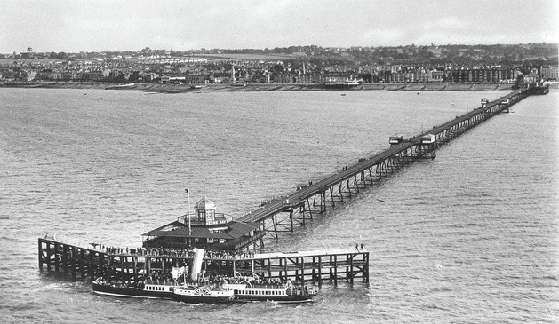
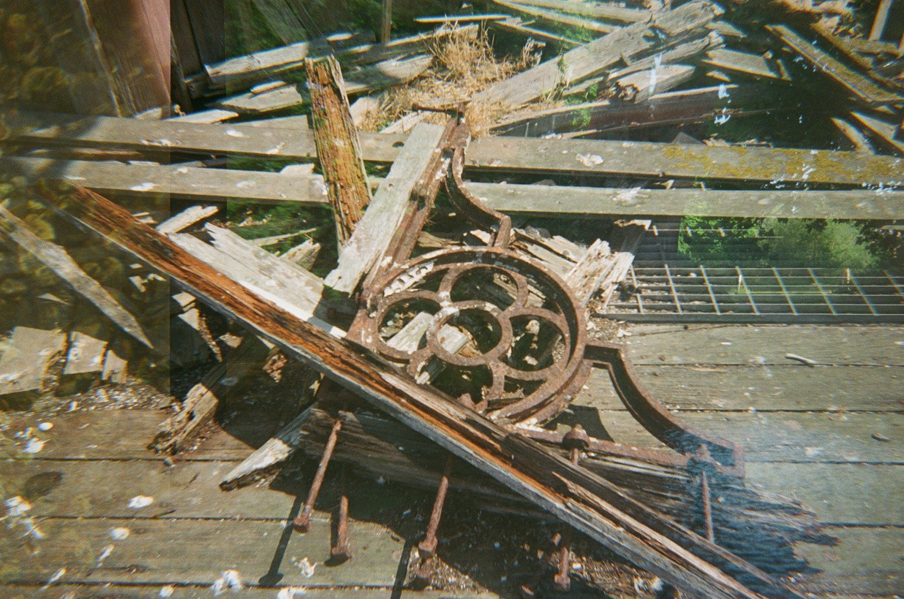
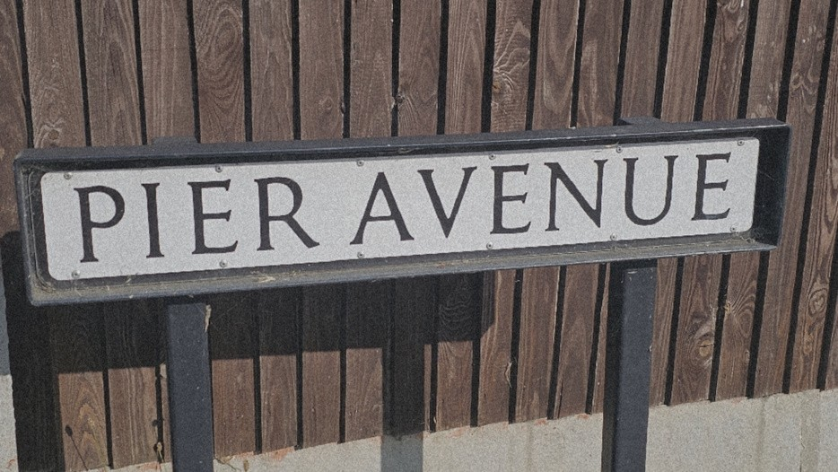
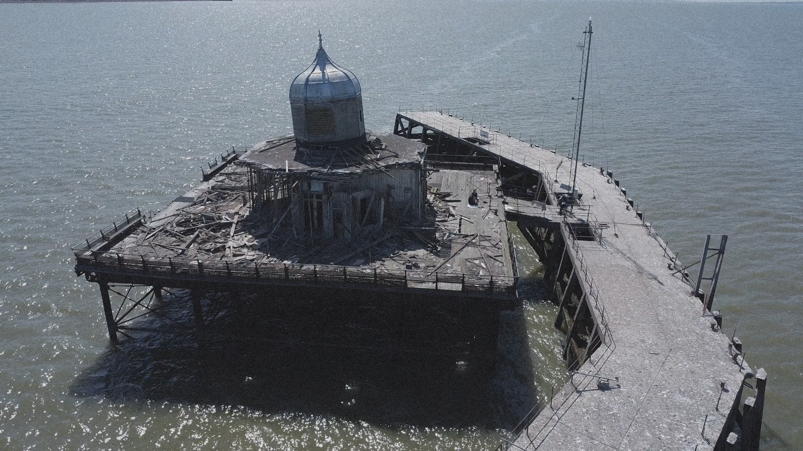
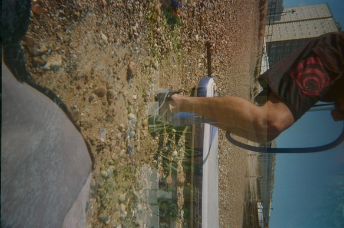
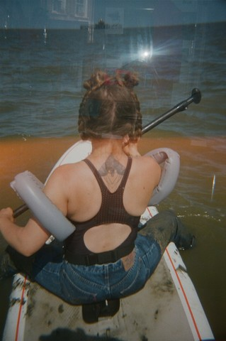
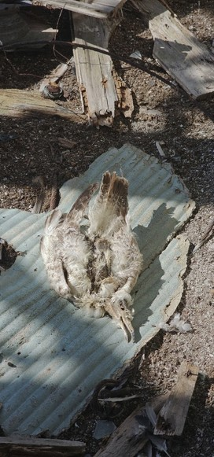
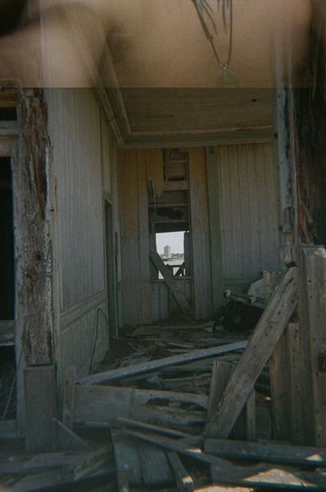
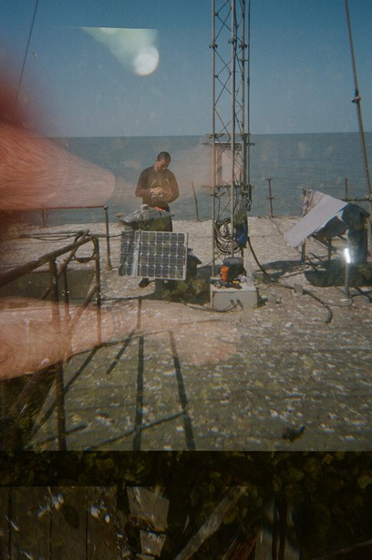
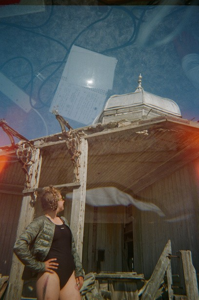